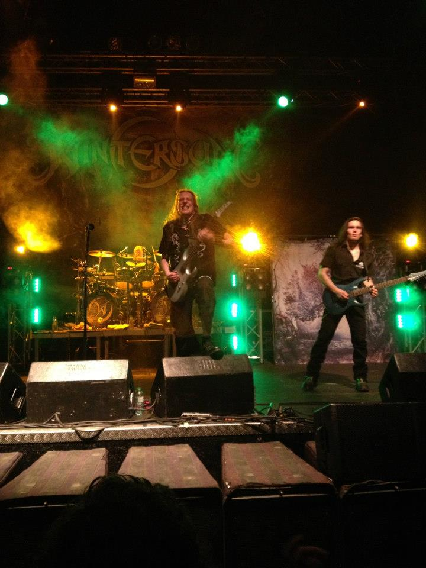
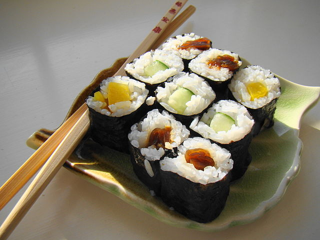

Über Mich





2006

Abitur am Gymnasium Norf
Englisch LK, Informatik LK, 3. Fach Chemie, 4. Fach Philosophie
Fragen?

Vielen Dank für die Aufmerksamkeit!
Fragen?
Zu schnell? Dieser Vortrag ist erreichbar unter: http://mpolitze.github.io/talks/2013/norf